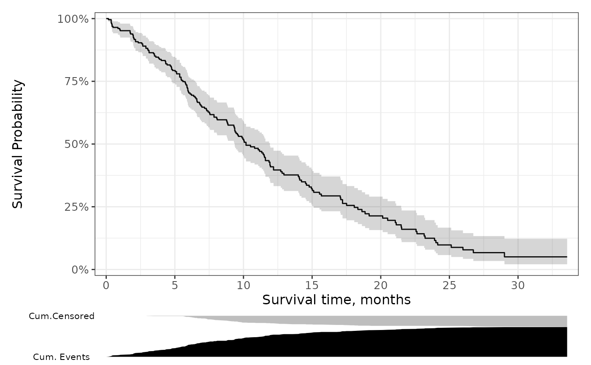

Function accepts a list of ggplot objects, and aligns each plot to the same widths as the first passed plot. This utility function is used to align the risktable plots with the risk curve plots.
Examples
# construct a base plot
gg <-
survfit2(Surv(time, status) ~ 1, data = df_lung) %>%
ggsurvfit() +
add_confidence_interval() +
scale_ggsurvfit()
# create an area plot representing the number of subjects who experienced
df_risktable <-
survfit2(Surv(time, status) ~ 1, data = df_lung) %>%
tidy_survfit()
# the event and those that have been censored.
gg_risktable_figure <-
df_risktable %>%
ggplot() +
geom_ribbon(aes(x = time, ymin = 0, ymax = cum.event), fill = "black") +
geom_ribbon(aes(x = time, ymin = n.risk[1], ymax = n.risk[1] - cum.censor), fill = "grey") +
theme_void() +
theme(axis.text.y = element_text(size=8)) +
scale_y_continuous(
breaks = c(0, max(df_risktable$n.risk)),
labels = c("Cum. Events", "Cum.Censored")
)
# align plots
lst_aligned_plots <- ggsurvfit_align_plots(list(gg, gg_risktable_figure))
# combine plots with patchwork
patchwork::wrap_plots(
lst_aligned_plots,
ncol = 1,
heights = c(0.9, 0.1)
)
